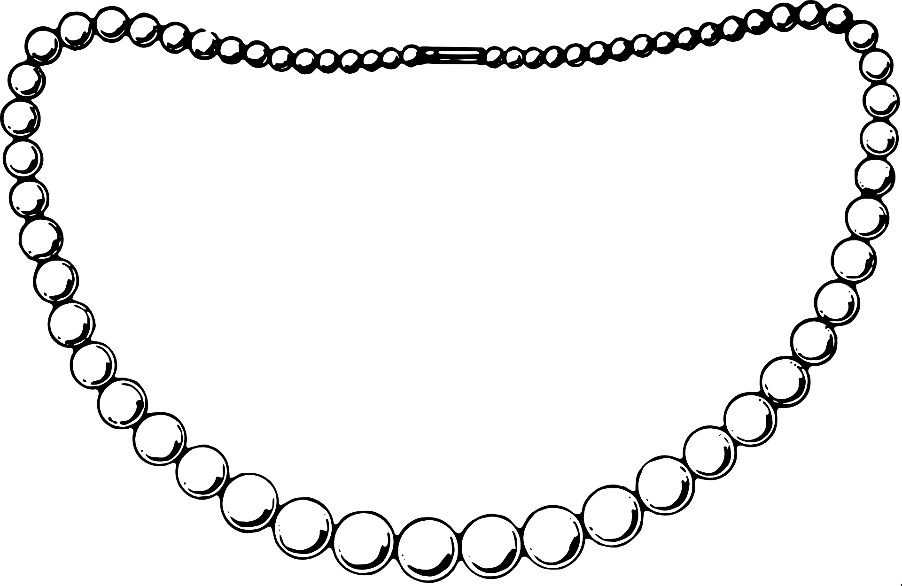

<nav
  *ngIf="windowWidth > 1200; else mobile"
  class="nav-bar"
  [ngClass]="{
    navv: (windowHeight >= 1 && curRoute === '/') || curRoute != '/'
  }"
>
  <div
    class="nav-bar-container"
    [ngClass]="{
      navCont: (windowHeight >= 1 && curRoute === '/') || curRoute != '/'
    }"
  >
    
    <p
      class="nav-bar-container_title"
      [ngClass]="{
        links: (windowHeight >= 1 && curRoute === '/') || curRoute != '/'
      }"
    >
      Vertris
    </p>
  </div>
  <ul
    [ngClass]="{
      border: (windowHeight >= 1 && curRoute === '/') || curRoute != '/'
    }"
  >
    <a
      *ngFor="let link of linksData"
      class="link"
      routerLink="{{ link.link }}"
      [ngClass]="{ hidden: windowHeight < 1 && curRoute === '/' }"
      ><li>{{ link.text | uppercase }}</li></a
    >
  </ul>
</nav>
<ng-template #mobile>
  <app-nav-bar-mobile></app-nav-bar-mobile>
</ng-template>
